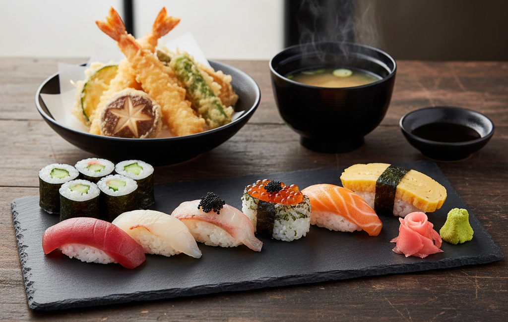

Chico
Variedad de 6pzs de nigiris y hosomaki, acompañados de tempura de 3 vegetales.
Precio: $490
Mediano
Variedad de 8pzs de nigiris, tamago y hosomaki, acompañados de tempura de 3 vegetales y 2 camarones.
Precio: $750
Grande
Variedad de 12pzs de nigiris premium, tamago, y hosomaki, acompañados de tempura mixta (vegetales y mariscos) y sopa miso.
Precio: $1,100